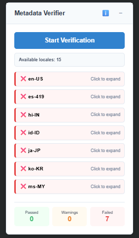
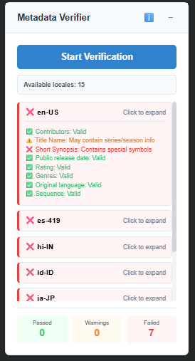
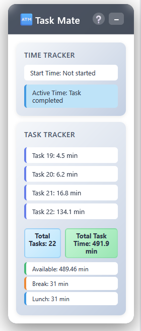

Mohammed Nibraz
Metadata & Workflow Optimization Specialist
Building automation-driven solutions that improve content operations, metadata quality, and workflow efficiency at scale.
What I Do
I work at the intersection of metadata operations, quality assurance, and workflow automation. My focus is on identifying operational bottlenecks, improving large-scale content workflows, and building lightweight automation solutions that reduce manual effort while improving quality and efficiency.
Over the past 2+ years in Prime Video content operations, I’ve contributed to metadata management, launch readiness, workflow coordination, productivity optimization, and automation initiatives that collectively save dozens of operational hours every week.
Operational Impact
35+
Hours Saved Weekly
50+
Operators Impacted
100+
Priority Titles Managed Weekly
4
Workflow Solutions Built
Workflow Solutions & Automation Projects
Quick Pass — Quality Workflow Automation
Quality Central workflows required operators to manually pass repetitive quality checks for every title, slowing down processing throughput.
Built a browser-based automation solution using JavaScript and Tampermonkey that automatically processes repetitive quality checks while preserving manual review before submission.

- 35+ operational hours saved weekly
- 50+ QC operators onboarded
- 40+ additional titles processed weekly
- Maintained 100% review accuracy
Metadata Validator — Multi-Locale Validation System
Metadata validation across multiple localizations required extensive manual verification of ratings, synopsis, genres, release dates, and contributor information.
Developed a metadata validation system that automatically validates metadata consistency across multiple locales, identifies missing fields, and flags potential publishing risks before launch.

Main Validation Dashboard

Validation Workflow

Validation Results
- Reduced metadata verification effort by 60%
- Improved validation consistency across locales
- Reduced manual review dependency
- Enabled faster launch readiness verification
Task Mate — Productivity & Time Intelligence Tracker
Tracking productivity, active task time, auxiliary status, and non-productive time manually created visibility gaps across workflows.
Developed a browser-based productivity tracking solution that monitors active time, task counts, auxiliary states, and production trends in real time while providing smart operational alerts.

Main Dashboard

Detailed Productivity Insights
- Improved visibility into productivity metrics
- Reduced time leakage during workflows
- Enabled data-driven productivity optimization
- Provided actionable operational insights
AI-Assisted Defect Formatter
Defect reporting across multiple locales required repetitive formatting and manual restructuring before stakeholder communication.
Built an AI-assisted formatting tool that converts raw defect inputs into structured operational callouts with automatic locale grouping and standardized reporting output.

- Reduced reporting effort significantly
- Improved consistency across partner communications
- Accelerated QA reporting workflows
- Standardized defect documentation structure
Core Areas of Expertise
Metadata Operations
- Multi-locale metadata handling
- Launch readiness verification
- CMS & MAM workflows
Workflow Automation
- Browser-based automation
- Operational tooling
- Process optimization
Quality Assurance
- QC workflow management
- Defect validation
- Root cause analysis
Operational Excellence
- SOP optimization
- Team productivity tracking
- Cross-functional coordination